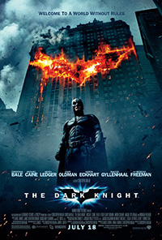

About
Set within a year after the events of Batman Begins, Batman, Lieutenant James Gordon, and new district attorney Harvey Dent successfully begin to round up the criminals that plague Gotham City until a mysterious and sadistic criminal mastermind known only as the Joker appears in Gotham, creating a new wave of chaos. Batman's struggle against the Joker becomes deeply personal, forcing him to "confront everything he believes" and improve his technology to stop him. A love triangle develops between Bruce Wayne, Dent and Rachel Dawes.
- Director: Christopher Nolan
- Writers: Jonathan Nolan, Christopher Nolan
- Stars: Christian Bale, Heath Ledger, Aaron Eckhart
Cast
 |
Christian Bale
Christian Charles Philip Bale was born in Pembrokeshire, Wales, UK on January 30, 1974, to English parents Jennifer "Jenny" (James) and David Charles Howard Bale. |
|
Heath Ledger
When hunky, twenty-year-old heart-throb Heath Ledger first came to the attention of the public in 1999, it was all too easy to tag him as a “pretty boy” and an actor of little depth. |
|
|
Aaron Eckhart
Aaron Eckhart was born on March 12, 1968 in Cupertino, California, USA as Aaron Edward Eckhart. |
Reviews
Heath Ledger is a legend!
16th July, 2010Well here it is, one of the most anticipated movies of the year so far. How was it? It was excellent. By far the best Batman film ever made and of course it will be one of the most memorable action films for a long while.
Film surpasses the hype
12th Feb, 2010We've been subjected to enormous amounts of hype and marketing for the Dark Knight. We've seen Joker scavenger hunts and one of the largest viral campaigns in advertising history and it culminates with the actual release of the movie.